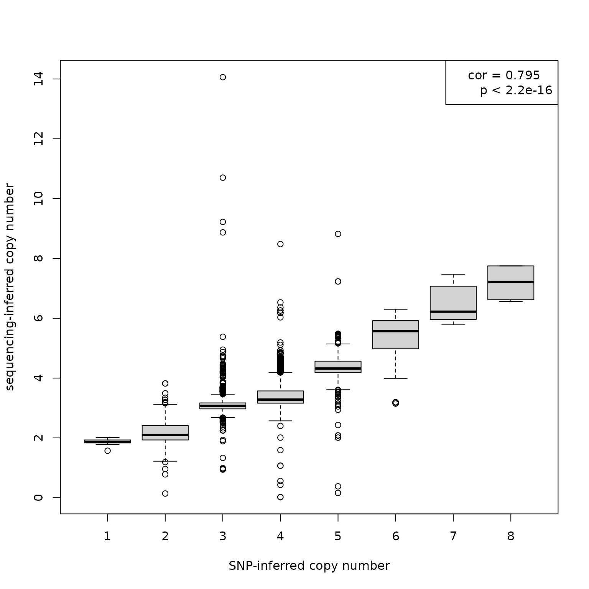

Setup
Connect to AnnotationHub:
ah <- AnnotationHub::AnnotationHub()Connect to ExperimentHub:
eh <- ExperimentHub::ExperimentHub()OrgDb package for human:
orgdb <- AnnotationHub::query(ah, c("orgDb", "Homo sapiens"))
orgdb <- orgdb[[1]]
orgdb
#> OrgDb object:
#> | DBSCHEMAVERSION: 2.1
#> | Db type: OrgDb
#> | Supporting package: AnnotationDbi
#> | DBSCHEMA: HUMAN_DB
#> | ORGANISM: Homo sapiens
#> | SPECIES: Human
#> | EGSOURCEDATE: 2022-Sep12
#> | EGSOURCENAME: Entrez Gene
#> | EGSOURCEURL: ftp://ftp.ncbi.nlm.nih.gov/gene/DATA
#> | CENTRALID: EG
#> | TAXID: 9606
#> | GOSOURCENAME: Gene Ontology
#> | GOSOURCEURL: http://current.geneontology.org/ontology/go-basic.obo
#> | GOSOURCEDATE: 2022-07-01
#> | GOEGSOURCEDATE: 2022-Sep12
#> | GOEGSOURCENAME: Entrez Gene
#> | GOEGSOURCEURL: ftp://ftp.ncbi.nlm.nih.gov/gene/DATA
#> | KEGGSOURCENAME: KEGG GENOME
#> | KEGGSOURCEURL: ftp://ftp.genome.jp/pub/kegg/genomes
#> | KEGGSOURCEDATE: 2011-Mar15
#> | GPSOURCENAME: UCSC Genome Bioinformatics (Homo sapiens)
#> | GPSOURCEURL:
#> | GPSOURCEDATE: 2022-Aug31
#> | ENSOURCEDATE: 2022-Jun28
#> | ENSOURCENAME: Ensembl
#> | ENSOURCEURL: ftp://ftp.ensembl.org/pub/current_fasta
#> | UPSOURCENAME: Uniprot
#> | UPSOURCEURL: http://www.UniProt.org/
#> | UPSOURCEDATE: Fri Sep 23 16:26:35 2022
keytypes(orgdb)
#> [1] "ACCNUM" "ALIAS" "ENSEMBL" "ENSEMBLPROT" "ENSEMBLTRANS"
#> [6] "ENTREZID" "ENZYME" "EVIDENCE" "EVIDENCEALL" "GENENAME"
#> [11] "GENETYPE" "GO" "GOALL" "IPI" "MAP"
#> [16] "OMIM" "ONTOLOGY" "ONTOLOGYALL" "PATH" "PFAM"
#> [21] "PMID" "PROSITE" "REFSEQ" "SYMBOL" "UCSCKG"
#> [26] "UNIPROT"Check: identify CORUM complexes that have a subunit of interest
Get core set of complexes:
core <- getCorum(set = "core", organism = "Human")
#> Using cached version from 2023-02-20 10:50:59Turn the CORUM complexes into a list of graph instances, where all nodes of a complex are connected to all other nodes of that complex with undirected edges.
core.glist <- corum2graphlist(core, subunit.id.type = "UNIPROT")Identify complexes that have a subunit of interest:
has.cdk2 <- hasSubunit(core.glist,
subunit = "CDK2",
id.type = "SYMBOL")Check the answer:
table(has.cdk2)
#> has.cdk2
#> FALSE TRUE
#> 2408 9
cdk2.glist <- core.glist[has.cdk2]
lapply(cdk2.glist, function(g) unlist(graph::nodeData(g, attr = "SYMBOL")))
#> $CORUM311_Cell_cycle_kinase_complex_CDK2
#> P12004 P24385 P24941 P38936
#> "PCNA" "CCND1" "CDK2" "CDKN1A"
#>
#> $`CORUM1003_RC_complex_(Replication_competent_complex)`
#> P09884 P20248 P24941 P35249 P35250 P35251 P40937 P40938 Q14181
#> "POLA1" "CCNA2" "CDK2" "RFC4" "RFC2" "RFC1" "RFC5" "RFC3" "POLA2"
#>
#> $`CORUM1004_RC_complex_during_S-phase_of_cell_cycle`
#> P09874 P09884 P11387 P15927 P18858 P20248 P24941 P27694 P28340 P35244
#> "PARP1" "POLA1" "TOP1" "RPA2" "LIG1" "CCNA2" "CDK2" "RPA1" "POLD1" "RPA3"
#> P35250 P35251 Q07864
#> "RFC2" "RFC1" "POLE"
#>
#> $`CORUM1656_p27-cyclinE-CDK2_complex`
#> P24864 P24941 P46527
#> "CCNE1" "CDK2" "CDKN1B"
#>
#> $`CORUM3015_p27-cyclinE-Cdk2_-_Ubiquitin_E3_ligase_(SKP1A,_SKP2,_CUL1,_CKS1B,_RBX1)_complex`
#> P24864 P24941 P46527 P61024 P62877 P63208 Q13309 Q13616
#> "CCNE1" "CDK2" "CDKN1B" "CKS1B" "RBX1" "SKP1" "SKP2" "CUL1"
#>
#> $`CORUM5556_CDK2-CCNA2_complex`
#> P20248 P24941
#> "CCNA2" "CDK2"
#>
#> $`CORUM5559_CDC2-CCNA2-CDK2_complex`
#> P06493 P20248 P24941
#> "CDK1" "CCNA2" "CDK2"
#>
#> $`CORUM5560_CDK2-CCNE1_complex`
#> P24864 P24941
#> "CCNE1" "CDK2"
#>
#> $`CORUM6589_E2F-1-DP-1-cyclinA-CDK2_complex`
#> P24941 P78396 Q01094 Q14186
#> "CDK2" "CCNA1" "E2F1" "TFDP1"We can then also inspect the graph with plotting utilities from the Rgraphviz package:
Check: extract BioPlex PPIs for a CORUM complex
Get the latest version of the 293T PPI network:
bp.293t <- getBioPlex(cell.line = "293T", version = "3.0")
#> Using cached version from 2023-02-20 10:51:04Turn the BioPlex PPI network into one big graph where bait and prey relationship are represented by directed edges from bait to prey.
bp.gr <- bioplex2graph(bp.293t)Now we can also easily pull out a BioPlex subnetwork for a CORUM complex of interest:
Check: identify interacting domains for a PFAM domain of interest
Add PFAM domain annotations to the node metadata:
bp.gr <- BioPlex::annotatePFAM(bp.gr, orgdb)Create a map from PFAM to UNIPROT:
unip2pfam <- graph::nodeData(bp.gr, graph::nodes(bp.gr), "PFAM")
pfam2unip <- stack(unip2pfam)
pfam2unip <- split(as.character(pfam2unip$ind), pfam2unip$values)
head(pfam2unip, 2)
#> $PF00001
#> [1] "P28566" "P25106" "P23945" "Q9HBX9" "P16473" "P04201" "Q9HC97" "P30968"
#> [9] "Q9Y2T6" "Q14330" "P46089" "Q15391" "Q9BXA5" "Q13304" "P61073" "P21462"
#> [17] "P25090" "Q99679" "P21730" "P30556" "P43088" "P32246" "P32249" "Q9Y2T5"
#> [25] "Q7Z602" "P43657" "O00398" "Q9H244" "Q86VZ1" "Q9NPB9" "Q99788" "P51684"
#> [33] "P35414" "O00590" "Q9H1Y3" "P55085" "O15218" "Q9GZQ4" "P25101" "Q9NS66"
#> [41] "Q9NQS5" "P21453" "P14416" "P24530" "P32239" "Q16581" "O00421" "Q9UHM6"
#> [49] "Q8N6U8" "P20309" "O15354" "Q9BXC0" "P47775" "P30550" "P49146" "P47900"
#> [57] "Q8TDU9" "P25103" "P35372" "P41597" "Q9P296" "P28335" "O95136" "P08173"
#> [65] "P29371" "P41146" "P43119" "O95977" "Q9HBW0" "Q99677" "Q9BXB1" "Q8WXD0"
#> [73] "O43193" "P30989" "Q8NGU9" "P47901" "P22888" "Q9GZN0" "P21917" "O60755"
#> [81] "Q8TDV0" "O43614" "Q9NS67" "P08912" "Q9UPC5" "Q8TDV2" "Q92633" "Q9NQ55"
#> [89] "Q13585" "Q9UBY5" "Q9H228" "P28222"
#>
#> $PF00002
#> [1] "Q8IZP9" "P41587" "Q8IZF4" "P49190" "P32241" "P47871" "P48960" "Q8IZF5"
#> [9] "O14514" "Q03431" "Q9NYQ6" "Q9HCU4" "Q8WXG9" "Q9NYQ7" "O60242" "O60241"
#> [17] "Q9HAR2" "O94910" "Q8IWK6" "O95490" "Q96PE1" "Q86SQ4"Let’s focus on PF02023, corresponding to the zinc finger-associated SCAN domain. For each protein containing the SCAN domain, we now extract PFAM domains connected to the SCAN domain by an edge in the BioPlex network.
scan.unip <- pfam2unip[["PF02023"]]
getIAPfams <- function(n) graph::nodeData(bp.gr, graph::edges(bp.gr)[[n]], "PFAM")
unip2iapfams <- lapply(scan.unip, getIAPfams)
unip2iapfams <- lapply(unip2iapfams, unlist)
names(unip2iapfams) <- scan.unipLooking at the top 5 PFAM domains most frequently connected to the SCAN domain by an edge in the BioPlex network …
pfam2iapfams <- unlist(unip2iapfams)
sort(table(pfam2iapfams), decreasing = TRUE)[1:5]
#> pfam2iapfams
#> PF02023 PF00096 PF01352 PF06467 PF00249
#> 208 169 100 14 8… we find PF02023, the SCAN domain itself, and PF00096, a C2H2 type zinc finger domain. This finding is consistent with results reported in the BioPlex 3.0 publication.
See also the PFAM domain-domain association analysis vignette for a more comprehensive analysis of PFAM domain associations in the BioPlex network.
Check: agreement between CNV tracks
Genomic data from whole-genome sequencing for six different lineages of the human embryonic kidney HEK293 cell line can be obtained from hek293genome.org.
This includes copy number variation (CNV) data for the 293T cell line. Available CNV tracks include (i) CNV regions inferred from sequencing read-depth analysis, and (ii) CNV regions inferred from Illumina SNP arrays.
Here, we check agreement between inferred copy numbers from both assay types.
We start by obtaining genomic coordinates and copy number scores from the sequencing track …
cnv.hmm <- getHEK293GenomeTrack(track = "cnv.hmm", cell.line = "293T")
#> Using cached version from 2023-02-20 10:51:13
cnv.hmm
#> GRanges object with 12382 ranges and 1 metadata column:
#> seqnames ranges strand | score
#> <Rle> <IRanges> <Rle> | <numeric>
#> [1] chr1 823231-829231 * | 3.26
#> [2] chr1 835231-913231 * | 3.08
#> [3] chr1 923231-1063231 * | 3.20
#> [4] chr1 1079231-1213231 * | 3.21
#> [5] chr1 1223231-1399231 * | 3.27
#> ... ... ... ... . ...
#> [12378] chrX 154750237-154762237 * | 3.96
#> [12379] chrX 154778237-154780237 * | 4.02
#> [12380] chrX 154802237-154822237 * | 3.79
#> [12381] chrX 154842237-154846237 * | 3.85
#> [12382] chrM 0-12000 * | 8.82
#> -------
#> seqinfo: 24 sequences from hg18 genome; no seqlengths… and from the SNP track.
cnv.snp <- getHEK293GenomeTrack(track = "cnv.snp", cell.line = "293T")
#> Using cached version from 2023-02-20 10:51:15
cnv.snp
#> GRanges object with 204 ranges and 1 metadata column:
#> seqnames ranges strand | score
#> <Rle> <IRanges> <Rle> | <integer>
#> [1] chr1 742429-5117504 * | 3
#> [2] chr1 5126548-27691288 * | 4
#> [3] chr1 27696717-33934376 * | 6
#> [4] chr1 33946560-48944728 * | 4
#> [5] chr1 48956914-50523337 * | 2
#> ... ... ... ... . ...
#> [200] chrX 106780442-127925246 * | 5
#> [201] chrX 127931857-131443550 * | 6
#> [202] chrX 131541633-136116260 * | 5
#> [203] chrX 136125141-147982191 * | 4
#> [204] chrX 147983995-154582606 * | 5
#> -------
#> seqinfo: 23 sequences from hg18 genome; no seqlengthsWe reduce the check for agreement between both CNV tracks by transferring copy numbers to overlapping genes, and subsequently, assess the agreement between the resulting gene copy numbers for both tracks.
As the genomic coordinates from both CNV tracks is based on the hg18 human genome assembly, we obtain gene coordinates for hg18 from AnnotationHub:
AnnotationHub::query(ah, c("TxDb", "Homo sapiens"))
#> AnnotationHub with 39 records
#> # snapshotDate(): 2022-10-31
#> # $dataprovider: GENCODE, UCSC, NCBI, tRNAdb, snoRNAdb, RMBase v2.0
#> # $species: Homo sapiens
#> # $rdataclass: TxDb, SQLiteFile, ChainFile, FaFile
#> # additional mcols(): taxonomyid, genome, description,
#> # coordinate_1_based, maintainer, rdatadateadded, preparerclass, tags,
#> # rdatapath, sourceurl, sourcetype
#> # retrieve records with, e.g., 'object[["AH52256"]]'
#>
#> title
#> AH52256 | TxDb.Hsapiens.BioMart.igis.sqlite
#> AH52257 | TxDb.Hsapiens.UCSC.hg18.knownGene.sqlite
#> AH52258 | TxDb.Hsapiens.UCSC.hg19.knownGene.sqlite
#> AH52259 | TxDb.Hsapiens.UCSC.hg19.lincRNAsTranscripts.sqlite
#> AH52260 | TxDb.Hsapiens.UCSC.hg38.knownGene.sqlite
#> ... ...
#> AH92592 | TxDb.Hsapiens.UCSC.hg38.refGene.sqlite
#> AH97949 | TxDb.Hsapiens.UCSC.hg38.knownGene.sqlite
#> AH100418 | TxDb.Hsapiens.UCSC.hg38.knownGene.sqlite
#> AH100419 | TxDb.Hsapiens.UCSC.hg38.refGene.sqlite
#> AH107068 | TxDb.Hsapiens.UCSC.hg38.knownGene.sqlite
txdb <- ah[["AH52257"]]
#> loading from cache
#> Loading required package: GenomicFeatures
gs <- GenomicFeatures::genes(txdb)
#> 379 genes were dropped because they have exons located on both strands
#> of the same reference sequence or on more than one reference sequence,
#> so cannot be represented by a single genomic range.
#> Use 'single.strand.genes.only=FALSE' to get all the genes in a
#> GRangesList object, or use suppressMessages() to suppress this message.
gs
#> GRanges object with 19742 ranges and 1 metadata column:
#> seqnames ranges strand | gene_id
#> <Rle> <IRanges> <Rle> | <character>
#> 1 chr19 63549984-63565932 - | 1
#> 10 chr8 18293035-18303003 + | 10
#> 100 chr20 42681577-42713790 - | 100
#> 1000 chr18 23784933-24011189 - | 1000
#> 10000 chr1 241718158-242073207 - | 10000
#> ... ... ... ... . ...
#> 9991 chr9 114020538-114135733 - | 9991
#> 9992 chr21 34658193-34665310 + | 9992
#> 9993 chr22 17403795-17489967 - | 9993
#> 9994 chr6 90596334-90640876 + | 9994
#> 9997 chr22 49308863-49310900 - | 9997
#> -------
#> seqinfo: 49 sequences (1 circular) from hg18 genomeWe then transfer SNP-inferred copy numbers to genes by overlap …
olaps <- GenomicRanges::findOverlaps(gs, cnv.snp)
joined <- gs[S4Vectors::queryHits(olaps)]
joined$score <- cnv.snp$score[S4Vectors::subjectHits(olaps)]
joined
#> GRanges object with 19555 ranges and 2 metadata columns:
#> seqnames ranges strand | gene_id score
#> <Rle> <IRanges> <Rle> | <character> <integer>
#> 1 chr19 63549984-63565932 - | 1 4
#> 10 chr8 18293035-18303003 + | 10 2
#> 100 chr20 42681577-42713790 - | 100 4
#> 1000 chr18 23784933-24011189 - | 1000 3
#> 10000 chr1 241718158-242073207 - | 10000 6
#> ... ... ... ... . ... ...
#> 9991 chr9 114020538-114135733 - | 9991 3
#> 9992 chr21 34658193-34665310 + | 9992 4
#> 9993 chr22 17403795-17489967 - | 9993 5
#> 9994 chr6 90596334-90640876 + | 9994 3
#> 9997 chr22 49308863-49310900 - | 9997 4
#> -------
#> seqinfo: 49 sequences (1 circular) from hg18 genome… and, analogously, transfer sequencing-inferred copy numbers to genes by overlap.
olaps <- GenomicRanges::findOverlaps(gs, cnv.hmm)
joined2 <- gs[S4Vectors::queryHits(olaps)]
joined2$score <- cnv.hmm$score[S4Vectors::subjectHits(olaps)]
joined2
#> GRanges object with 22366 ranges and 2 metadata columns:
#> seqnames ranges strand | gene_id score
#> <Rle> <IRanges> <Rle> | <character> <numeric>
#> 1 chr19 63549984-63565932 - | 1 3.18
#> 10 chr8 18293035-18303003 + | 10 1.96
#> 100 chr20 42681577-42713790 - | 100 2.98
#> 1000 chr18 23784933-24011189 - | 1000 2.94
#> 10000 chr1 241718158-242073207 - | 10000 5.92
#> ... ... ... ... . ... ...
#> 9990 chr15 32309489-32417557 - | 9990 2.26
#> 9991 chr9 114020538-114135733 - | 9991 3.45
#> 9993 chr22 17403795-17489967 - | 9993 4.48
#> 9994 chr6 90596334-90640876 + | 9994 3.14
#> 9997 chr22 49308863-49310900 - | 9997 3.35
#> -------
#> seqinfo: 49 sequences (1 circular) from hg18 genomeWe then restrict both tracks to common genes.
Now, can assess agreement by testing the correlation between SNP-inferred gene copy numbers and the corresponding sequencing-inferred gene copy numbers.
cor(joined$score, joined2$score)
#> [1] 0.7953383
cor.test(joined$score, joined2$score)
#>
#> Pearson's product-moment correlation
#>
#> data: joined$score and joined2$score
#> t = 176.07, df = 18008, p-value < 2.2e-16
#> alternative hypothesis: true correlation is not equal to 0
#> 95 percent confidence interval:
#> 0.7899089 0.8006431
#> sample estimates:
#> cor
#> 0.7953383We also inspect the correlation via a boxplot.
spl <- split(joined2$score, joined$score)
boxplot(spl, xlab = "SNP-inferred copy number", ylab = "sequencing-inferred copy number")
rho <- cor(joined$score, joined2$score)
rho <- paste("cor", round(rho, digits=3), sep=" = ")
p <- cor.test(joined$score, joined2$score)
p <- p$p.value
p <- " p < 2.2e-16"
legend("topright", legend=c(rho, p))
Check: expressed genes are showing up as prey (293T cells)
Get RNA-seq data for HEK293 cells from GEO: GSE122425
se <- getGSE122425()
#> Using cached version from 2023-02-20 10:51:22
se
#> class: SummarizedExperiment
#> dim: 57905 6
#> metadata(0):
#> assays(2): raw rpkm
#> rownames(57905): ENSG00000223972 ENSG00000227232 ... ENSG00000231514
#> ENSG00000235857
#> rowData names(4): SYMBOL KO GO length
#> colnames(6): GSM3466389 GSM3466390 ... GSM3466393 GSM3466394
#> colData names(41): title geo_accession ... passages.ch1 strain.ch1Inspect expression of prey genes:
bait <- unique(bp.293t$SymbolA)
length(bait)
#> [1] 8995
prey <- unique(bp.293t$SymbolB)
length(prey)
#> [1] 10419
ind <- match(prey, rowData(se)$SYMBOL)
par(las = 2)
boxplot(log2(assay(se, "rpkm") + 0.5)[ind,],
names = se$title,
ylab = "log2 RPKM")How many prey genes are expressed (raw read count > 0) in all 3 WT reps:
# background: how many genes in total are expressed in all three WT reps
gr0 <- rowSums(assay(se)[,1:3] > 0)
table(gr0 == 3)
#>
#> FALSE TRUE
#> 33842 24063
# prey: expressed in all three WT reps
table(gr0[ind] == 3)
#>
#> FALSE TRUE
#> 599 9346
# prey: expressed in at least one WT rep
table(gr0[ind] > 0)
#>
#> FALSE TRUE
#> 305 9640Are prey genes overrepresented in the expressed genes?
exprTable <-
matrix(c(9346, 1076, 14717, 32766),
nrow = 2,
dimnames = list(c("Expressed", "Not.expressed"),
c("In.prey.set", "Not.in.prey.set")))
exprTable
#> In.prey.set Not.in.prey.set
#> Expressed 9346 14717
#> Not.expressed 1076 32766Test using hypergeometric test (i.e. one-sided Fisher’s exact test):
fisher.test(exprTable, alternative = "greater")
#>
#> Fisher's Exact Test for Count Data
#>
#> data: exprTable
#> p-value < 2.2e-16
#> alternative hypothesis: true odds ratio is greater than 1
#> 95 percent confidence interval:
#> 18.29105 Inf
#> sample estimates:
#> odds ratio
#> 19.34726Alternatively: permutation test, i.e. repeatedly sample number of prey genes from the background, and assess how often we have as many or more than 9346 genes expressed:
Check: is there a relationship between prey frequency and prey expression level?
Check which genes turn up most frequently as prey:
prey.freq <- sort(table(bp.293t$SymbolB), decreasing = TRUE)
preys <- names(prey.freq)
prey.freq <- as.vector(prey.freq)
names(prey.freq) <- preys
head(prey.freq)
#> HSPA5 HSPA8 TUBB8 UBB YBX1 YWHAH
#> 199 192 176 173 139 132
summary(prey.freq)
#> Min. 1st Qu. Median Mean 3rd Qu. Max.
#> 1.00 2.00 6.00 11.34 16.00 199.00
hist(prey.freq, breaks = 50, main = "", xlab = "Number of PPIs", ylab = "Number of genes")
Prey genes are involved in 11 PPIs on average.
There doesn’t seem to be a strong correlation between expression level and the frequency of gene to turn up as prey:
ind <- match(names(prey.freq), rowData(se)$SYMBOL)
rmeans <- rowMeans(assay(se, "rpkm")[ind, 1:3])
log.rmeans <- log2(rmeans + 0.5)
par(pch = 20)
plot( x = prey.freq,
y = log.rmeans,
xlab = "prey frequency",
ylab = "log2 RPKM")
cor(prey.freq,
log.rmeans,
use = "pairwise.complete.obs")
#> [1] 0.2035977See also the BioNet maximum scoring subnetwork analysis vignette for a more comprehensive analysis of the 293T transcriptome data from GSE122425 when mapped onto BioPlex PPI network.
Check: differential protein expression (HEK293 vs. HCT116)
Get the relative protein expression data comparing 293T and HCT116 cells from Supplementary Table S4A of the BioPlex 3 paper:
bp.prot <- getBioplexProteome()
#> Using cached version from 2023-02-20 10:51:29
bp.prot
#> class: SummarizedExperiment
#> dim: 9604 10
#> metadata(0):
#> assays(1): exprs
#> rownames(9604): P0CG40 Q8IXZ3-4 ... Q9H3S5 Q8WYQ3
#> rowData names(5): ENTREZID SYMBOL nr.peptides log2ratio adj.pvalue
#> colnames(10): HCT1 HCT2 ... HEK4 HEK5
#> colData names(1): cell.line
rowData(bp.prot)
#> DataFrame with 9604 rows and 5 columns
#> ENTREZID SYMBOL nr.peptides log2ratio adj.pvalue
#> <character> <character> <integer> <numeric> <numeric>
#> P0CG40 100131390 SP9 1 -2.819071 6.66209e-08
#> Q8IXZ3-4 221833 SP8 3 -3.419888 6.94973e-07
#> P55011 6558 SLC12A2 4 0.612380 4.85602e-06
#> O60341 23028 KDM1A 7 -0.319695 5.08667e-04
#> O14654 8471 IRS4 4 -5.951096 1.45902e-06
#> ... ... ... ... ... ...
#> Q9H6X4 80194 TMEM134 2 -0.379342 7.67195e-05
#> Q9BS91 55032 SLC35A5 1 -2.237634 8.75523e-05
#> Q9UKJ5 26511 CHIC2 1 -0.614932 1.78756e-03
#> Q9H3S5 93183 PIGM 1 -1.011397 8.91589e-06
#> Q8WYQ3 400916 CHCHD10 1 0.743852 1.17163e-03A couple of quick sanity checks:
- The relative abundances are scaled to sum up to 100% for each protein:
rowSums(assay(bp.prot)[1:5,])
#> P0CG40 Q8IXZ3-4 P55011 O60341 O14654
#> 99.99994 99.99991 99.99996 100.00011 100.00006- The
rowDatacolumnlog2ratiocorresponds to the mean of the five HEK samples, divided by the mean of the five HCT samples (and then taking log2 of it):
ratio <- rowMeans(assay(bp.prot)[1:5, 1:5]) / rowMeans(assay(bp.prot)[1:5, 6:10])
log2(ratio)
#> P0CG40 Q8IXZ3-4 P55011 O60341 O14654
#> -2.8190710 -3.4198879 0.6123799 -0.3196953 -5.9510960- The
rowDatacolumnadj.pvaluestores Benjamini-Hochberg adjusted p-values from a t-test between the five HEK samples and the five HCT samples:
t.test(assay(bp.prot)[1, 1:5], assay(bp.prot)[1, 6:10])
#>
#> Welch Two Sample t-test
#>
#> data: assay(bp.prot)[1, 1:5] and assay(bp.prot)[1, 6:10]
#> t = -27.898, df = 7.5779, p-value = 6.482e-09
#> alternative hypothesis: true difference in means is not equal to 0
#> 95 percent confidence interval:
#> -16.29035 -13.78047
#> sample estimates:
#> mean of x mean of y
#> 2.482288 17.517700The Transcriptome-Proteome analysis vignette also explores the agreement between differential gene expression and differential protein expression when comparing HEK293 against HCT116 cells.
SessionInfo
sessionInfo()
#> R version 4.2.0 (2022-04-22)
#> Platform: x86_64-pc-linux-gnu (64-bit)
#> Running under: Ubuntu 20.04.5 LTS
#>
#> Matrix products: default
#> BLAS: /usr/lib/x86_64-linux-gnu/openblas-pthread/libblas.so.3
#> LAPACK: /usr/lib/x86_64-linux-gnu/openblas-pthread/liblapack.so.3
#>
#> locale:
#> [1] LC_CTYPE=en_US.UTF-8 LC_NUMERIC=C
#> [3] LC_TIME=en_US.UTF-8 LC_COLLATE=en_US.UTF-8
#> [5] LC_MONETARY=en_US.UTF-8 LC_MESSAGES=en_US.UTF-8
#> [7] LC_PAPER=en_US.UTF-8 LC_NAME=C
#> [9] LC_ADDRESS=C LC_TELEPHONE=C
#> [11] LC_MEASUREMENT=en_US.UTF-8 LC_IDENTIFICATION=C
#>
#> attached base packages:
#> [1] stats4 stats graphics grDevices utils datasets methods
#> [8] base
#>
#> other attached packages:
#> [1] GenomicFeatures_1.50.4 graph_1.76.0
#> [3] AnnotationHub_3.6.0 BiocFileCache_2.6.1
#> [5] dbplyr_2.2.0 AnnotationDbi_1.60.0
#> [7] BioPlex_1.5.4 SummarizedExperiment_1.28.0
#> [9] Biobase_2.58.0 GenomicRanges_1.50.2
#> [11] GenomeInfoDb_1.34.9 IRanges_2.32.0
#> [13] S4Vectors_0.36.1 BiocGenerics_0.44.0
#> [15] MatrixGenerics_1.10.0 matrixStats_0.62.0
#> [17] BiocStyle_2.26.0
#>
#> loaded via a namespace (and not attached):
#> [1] bitops_1.0-7 fs_1.5.2
#> [3] bit64_4.0.5 progress_1.2.2
#> [5] filelock_1.0.2 httr_1.4.3
#> [7] rprojroot_2.0.3 tools_4.2.0
#> [9] bslib_0.3.1 utf8_1.2.2
#> [11] R6_2.5.1 DBI_1.1.3
#> [13] prettyunits_1.1.1 tidyselect_1.1.2
#> [15] bit_4.0.4 curl_4.3.2
#> [17] compiler_4.2.0 textshaping_0.3.6
#> [19] cli_3.3.0 xml2_1.3.3
#> [21] desc_1.4.1 DelayedArray_0.24.0
#> [23] rtracklayer_1.58.0 bookdown_0.27
#> [25] sass_0.4.1 rappdirs_0.3.3
#> [27] pkgdown_2.0.4 Rsamtools_2.14.0
#> [29] systemfonts_1.0.4 stringr_1.4.0
#> [31] digest_0.6.29 rmarkdown_2.14
#> [33] XVector_0.38.0 pkgconfig_2.0.3
#> [35] htmltools_0.5.2 highr_0.9
#> [37] fastmap_1.1.0 rlang_1.0.2
#> [39] RSQLite_2.2.14 shiny_1.7.1
#> [41] BiocIO_1.8.0 jquerylib_0.1.4
#> [43] generics_0.1.2 jsonlite_1.8.0
#> [45] BiocParallel_1.32.5 dplyr_1.0.9
#> [47] RCurl_1.98-1.7 magrittr_2.0.3
#> [49] GenomeInfoDbData_1.2.9 Matrix_1.4-1
#> [51] Rcpp_1.0.8.3 fansi_1.0.3
#> [53] lifecycle_1.0.1 stringi_1.7.6
#> [55] yaml_2.3.5 zlibbioc_1.44.0
#> [57] grid_4.2.0 blob_1.2.3
#> [59] parallel_4.2.0 promises_1.2.0.1
#> [61] ExperimentHub_2.6.0 crayon_1.5.1
#> [63] lattice_0.20-45 Biostrings_2.66.0
#> [65] hms_1.1.1 KEGGREST_1.38.0
#> [67] knitr_1.39 pillar_1.7.0
#> [69] rjson_0.2.21 codetools_0.2-18
#> [71] biomaRt_2.54.0 XML_3.99-0.10
#> [73] glue_1.6.2 BiocVersion_3.16.0
#> [75] evaluate_0.15 BiocManager_1.30.18
#> [77] png_0.1-7 vctrs_0.4.1
#> [79] httpuv_1.6.5 purrr_0.3.4
#> [81] assertthat_0.2.1 cachem_1.0.6
#> [83] xfun_0.31 mime_0.12
#> [85] xtable_1.8-4 restfulr_0.0.15
#> [87] later_1.3.0 ragg_1.2.2
#> [89] tibble_3.1.7 GenomicAlignments_1.34.0
#> [91] memoise_2.0.1 ellipsis_0.3.2
#> [93] interactiveDisplayBase_1.36.0